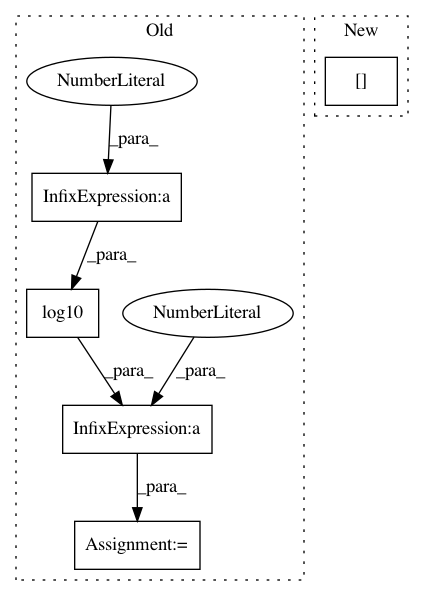

4ef8f94ea8f6fc3cc1f35743e7c7af0b92ffb76b,nussl/separation/deep_separation.py,DeepSeparation,_compute_spectrograms,#DeepSeparation#,53
Before Change
for i in range(self.audio_signal.num_channels):
self.mel_spectrogram[i, :, :] = np.dot(magnitude[:, :, i].T, self.mel_filter_bank)
self.mel_spectrogram = 10.0 * np.log10(self.mel_spectrogram**2 + 1e-7)
self.silence_mask = self.mel_spectrogram > self.cutoff
self.mel_spectrogram -= np.mean(self.mel_spectrogram)
self.mel_spectrogram /= np.std(self.mel_spectrogram) + 1e-7
return
After Change
return model, metadata
def _compute_spectrograms(self):
self.audio_signal.stft_params.window_length = self.metadata["n_fft"]
self.audio_signal.stft_params.hop_length = self.metadata["hop_length"]
self.stft = self.audio_signal.stft(overwrite=True, remove_reflection=True,
use_librosa=self.use_librosa_stft)
In pattern: SUPERPATTERN
Frequency: 3
Non-data size: 5
Instances
Project Name: interactiveaudiolab/nussl
Commit Name: 4ef8f94ea8f6fc3cc1f35743e7c7af0b92ffb76b
Time: 2018-11-29
Author: prem@u.northwestern.edu
File Name: nussl/separation/deep_separation.py
Class Name: DeepSeparation
Method Name: _compute_spectrograms
Project Name: tiberiu44/TTS-Cube
Commit Name: 9cf2bcdb24f23a17ec11e69b8885851771dfd3d8
Time: 2018-10-25
Author: boros@adobe.com
File Name: cube/models/vocoder.py
Class Name: BeeCoder
Method Name: learn
Project Name: hls-fpga-machine-learning/hls4ml
Commit Name: 6d27701311a5d0f013cf608dc5947e2fd0813882
Time: 2020-05-04
Author: sioni.summers10@imperial.ac.uk
File Name: hls4ml/model/hls_model.py
Class Name: WeightVariable
Method Name: update_precision